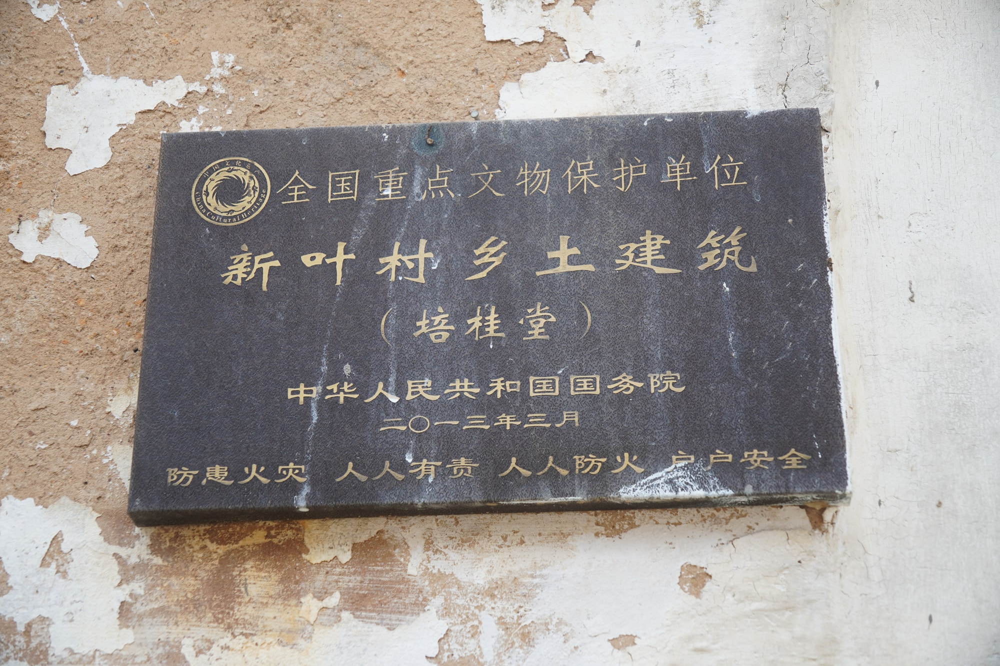
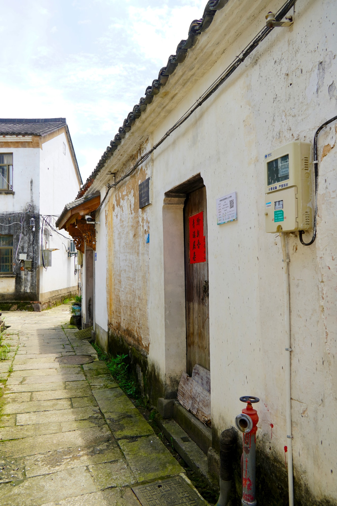

国保传统民居
屋宇舒展的一座老宅培桂堂
培桂堂是全国重点文物保护单位“新叶村乡土建筑”中的一座传统民居，坐落在南塘附近的老宅片区。它以相对宽展的建筑规模，成为这一带较为醒目的一处宅院。
01
规模较大的一座宅院

培桂堂总建筑面积约五百四十四平方米，在新叶村传统民居中属于规模较大的一座。五百余平方米的空间，使它在层层相接的村中民居里显得较为宽展，也为人们认识古村中不同尺度的居住建筑提供了一个直观实例。

培桂堂是全国重点文物保护单位“新叶村乡土建筑”中的一座传统民居，坐落在南塘附近的老宅片区。它以相对宽展的建筑规模，成为这一带较为醒目的一处宅院。

培桂堂总建筑面积约五百四十四平方米，在新叶村传统民居中属于规模较大的一座。五百余平方米的空间，使它在层层相接的村中民居里显得较为宽展，也为人们认识古村中不同尺度的居住建筑提供了一个直观实例。